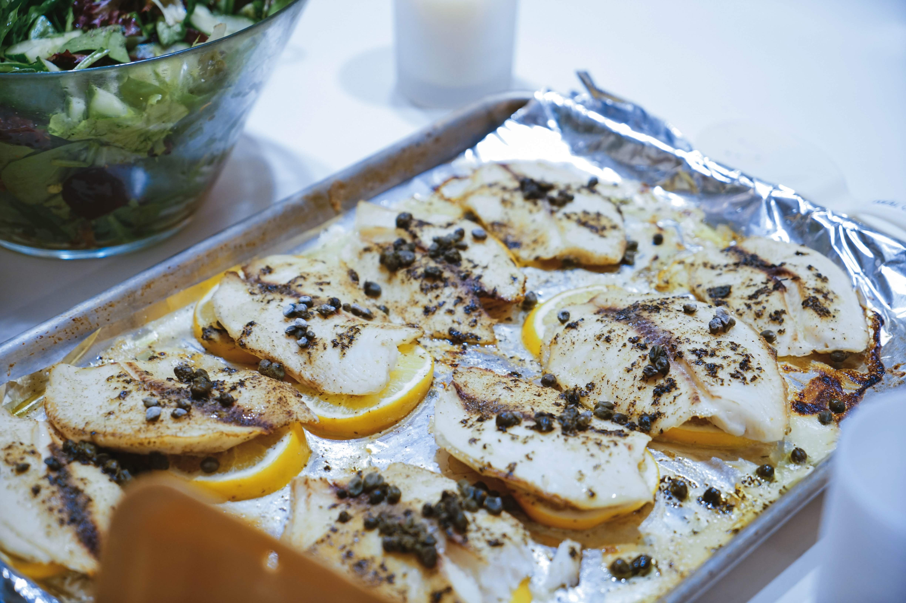

Pan-Seared Tilapia
Home

Learn how to cook tilapia with this easy, 15-minute recipe for pan-seared tilapia that's delicious and full of flavor. This simple method of cooking fish fillets is great for a weeknight meal. Serve with fresh veggies.
Ingredients
- 4 tilapia fillets
- salt and black pepper
- 1/2 cup of all-purpose flour
- 1 tbspn olive oil
- 2 tbspn unsalted butter, melted
- 1 tbspn lemon juice
- 1 tspn chopped fresh flat-leaf parsley
- 1/2 tspn chopped fresh thyme
Directions
- Rinse tilapia fillets in cold water and pat dry with paper towels. Season both sides of each fillet with salt and pepper.
- Place flour in a shallow dish. Gently press each fillet into the flour to coat and shake off any excess.
- Heat olive oil in a large skillet over medium-high heat. Cook tilapia fillets in the hot oil, in batches if necessary, until fish flakes easily with a fork, about 4 minutes per side.
- Brush the melted butter onto the tilapia fillets in the last minute before removing from the skillet.
- Drizzle fillets with lemon juice and garnish with parsley and thyme.